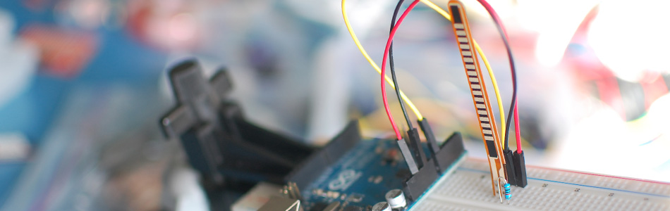

Sensing A Bend With A Flex Sensor + Arduino

We spend so much time talking about sensing things less mechanical, that is is easy to forget the accelerometer isnt the only part in town. The flex sensor is one of those parts often overlooked by the advanced user. But what if you need to check if something bent? Like a finger, or a doll arm. (A lot of toy prototypes seem to have this need).
Anytime you need to detect a flex, or bend, a flex sensor is probably the part for you. They come in a few different sizes ( small, large).
The flex sensor is basically a variable resistor that reacts to bends. Unbent it measures about 22KΩ, to 40KΩ when bend 180º. Note that the bend is only detected in one direction and the reading can be a bit shaky, so you will have best results detecting changes of at least 10º.
Also, make sure you don't bend the sensor at the base as it wont register as a change, and could break the leads. I always tape some thick board to the base of it to make it wont bend there.

Hooking it up, and why
The flex sensor changes its resistance when flexed so we can measure that change using one of the Arduino's analog pins. But to do that we need a fixed resistor (not changing) that we can use for that comparison (We are using a 22K resistor). This is called a voltage divider and divides the 5v between the flex sensor and the resistor.
The analog read on your arduino is basically a voltage meter. at 5V (its max) it would read 1023, and at 0v it read 0. So we can measure how much voltage is on the flex sensor using the analogRead and we have our reading.
The amount of that 5V that each part gets is proportional to its resistance. So if the the flex sensor and the resistor have the same resistance, the 5V is split evenly (2.5V) to each part. (analog reading of 512)
Just pretend that the the sensor was reading only 1.1K of resistance, the 22K resistor is going to soak up 20 times as much of that 5V. So the flex sensor would only get .23V. (analog reading of 46)
And if we roll the flex sensor around a tibe, the flex sensor may be 40K or resistance, so the flex sensor will soak up 1.8 times as much of that 5V as the 22K resistor. So the flex sensor would get 3V. (analog reading of 614)
Code
The arduino code for this just could not be easier. We are adding some serial prints and delays to it just so you can easily see the readings, but they dont need to be there if you dont need them.
In my tests I was getting a reading on the arduino between 512, and 614. So the range isnt the best. But using the map() function, you can convert that to a larger range.
int flexSensorPin = A0; //analog pin 0 void setup(){ Serial.begin(9600); } void loop(){ int flexSensorReading = analogRead(flexSensorPin); Serial.println(flexSensorReading); //In my tests I was getting a reading on the arduino between 512, and 614. //Using map(), you can convert that to a larger range like 0-100. int flex0to100 = map(flexSensorReading, 512, 614, 0, 100); Serial.println(flex0to100); delay(250); //just here to slow down the output for easier reading }
Article taken from bildr.org with minor changes - I am the original author of this content